Regression comparison
Download resultsDataset
Training setting
Repulsion weight
Repulsion location
Compare repulsion locations
Method
Random points redraw every step and exclude all training inputs. Training and random use B points; combined uses 2B. Prediction axes match within each DE or BDKN row.
Functional repulsion
BetterWorse · relative rank within each column
DE
| Repulsion inputs | RMSE | NLL | Training seconds |
|---|---|---|---|
| Training | 59.81564 | 12.02914 | 6.32 |
| Random | 90.39318 | 5.85488 | 7.00 |
| Training + random | 82.70270 | 5.64487 | 7.26 |
BDKN
| Repulsion inputs | RMSE | NLL | Training seconds |
|---|---|---|---|
| Training | 60.13356 | 9.40192 | 6.46 |
| Random | 97.65643 | 5.36104 | 7.13 |
| Training + random | 87.35036 | 5.28911 | 7.39 |
Stage 1 · total loss and data fit
Repulsion loss R only
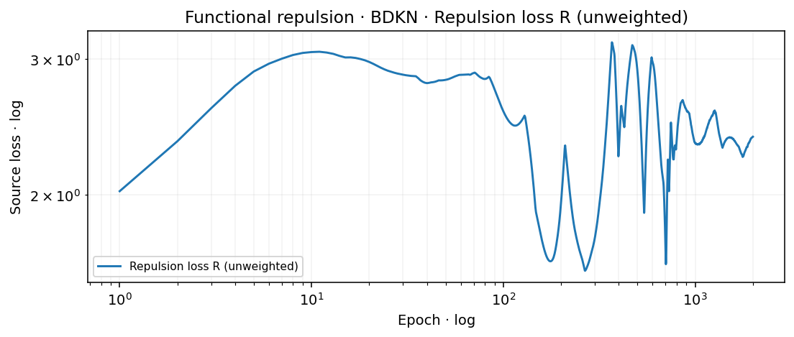
X: log · Y: log
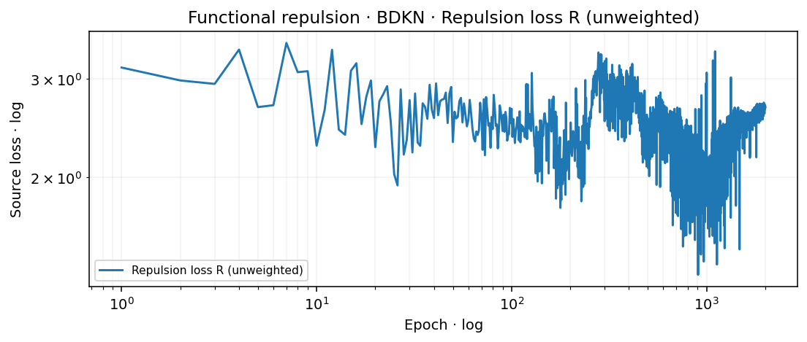
X: log · Y: log
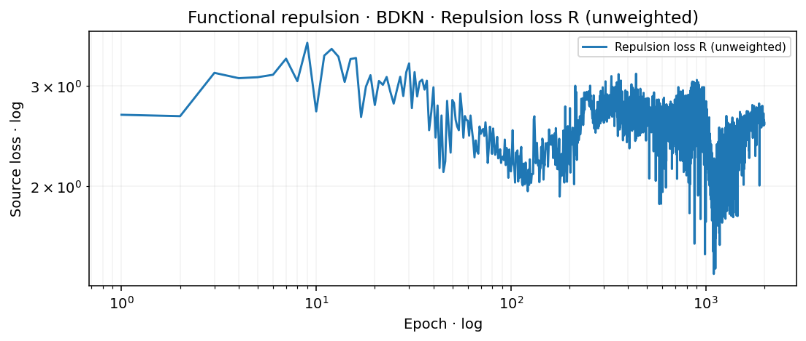
X: log · Y: log
Stage 2 · Bayesian marginal NLL
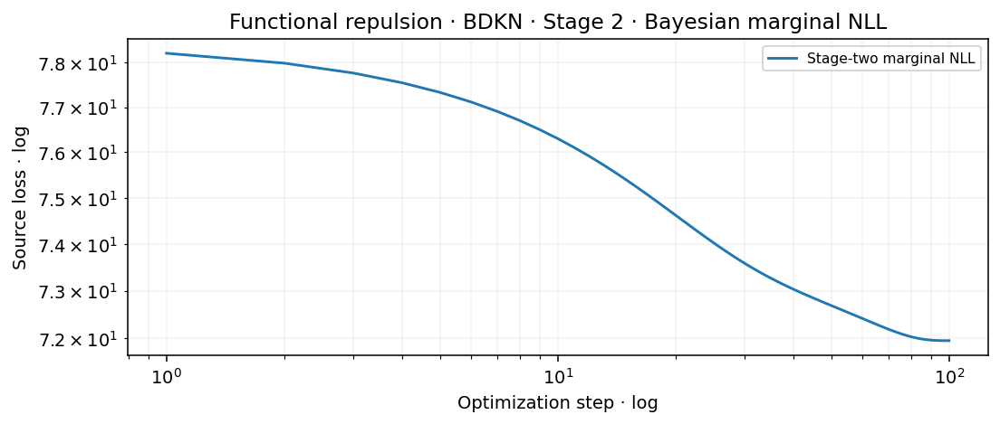
X: log · Y: log
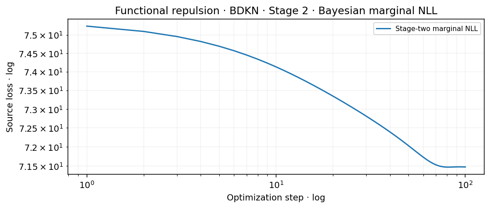
X: log · Y: log
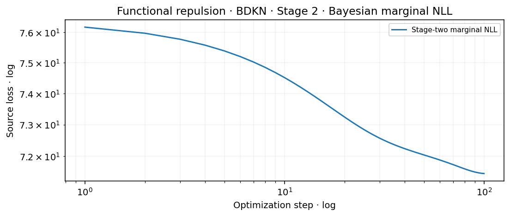
X: log · Y: log
First-order repulsion
BetterWorse · relative rank within each column
DE
| Repulsion inputs | RMSE | NLL | Training seconds |
|---|---|---|---|
| Training | 58.72253 | 7.45253 | 12.45 |
| Random | 58.57467 | 6.15259 | 13.19 |
| Training + random | 65.88643 | 5.89067 | 13.28 |
BDKN
| Repulsion inputs | RMSE | NLL | Training seconds |
|---|---|---|---|
| Training | 53.87606 | 6.76964 | 12.58 |
| Random | 53.79326 | 5.20351 | 13.37 |
| Training + random | 53.21746 | 4.95797 | 13.40 |
Stage 1 · total loss and data fit
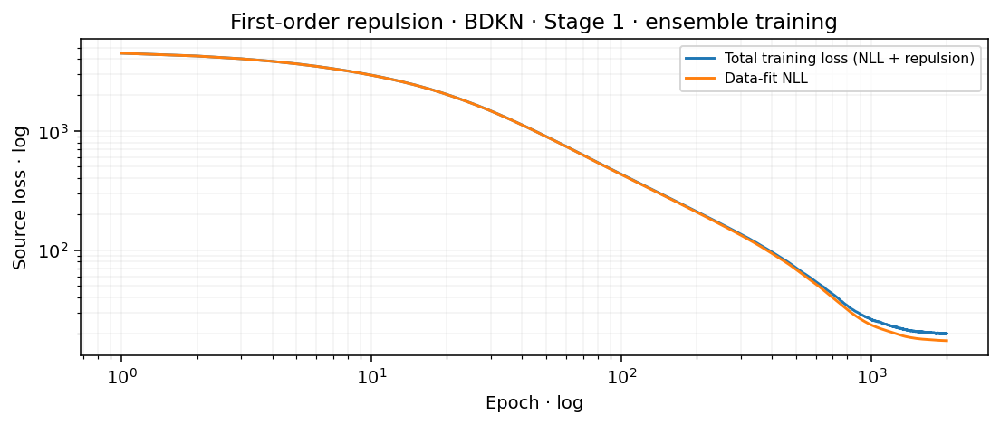
X: log · Y: log
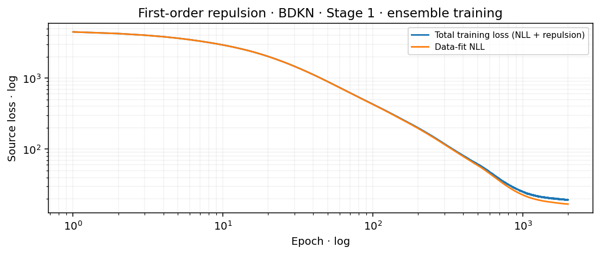
X: log · Y: log
X: log · Y: log
Repulsion loss R only
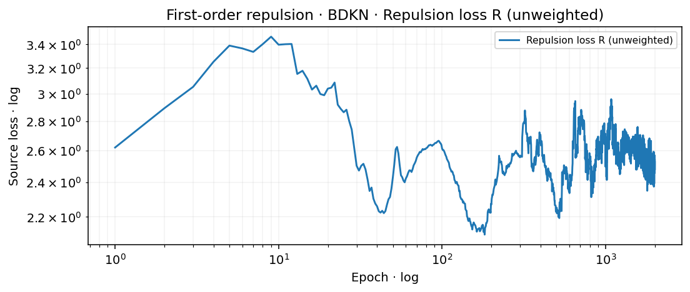
X: log · Y: log
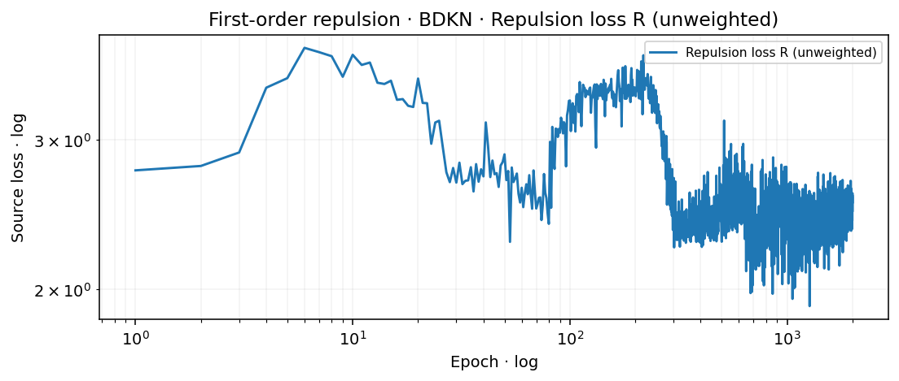
X: log · Y: log
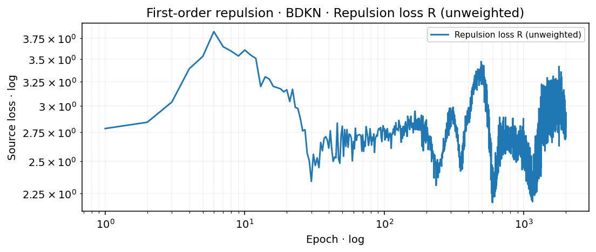
X: log · Y: log
Stage 2 · Bayesian marginal NLL
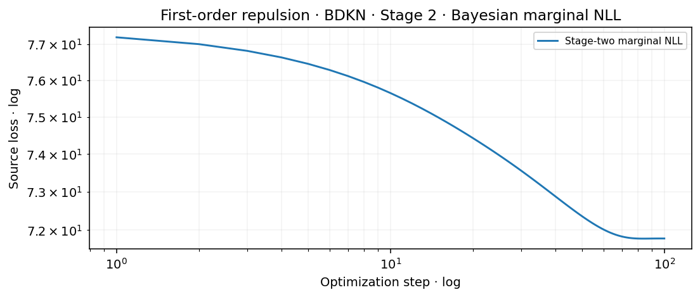
X: log · Y: log
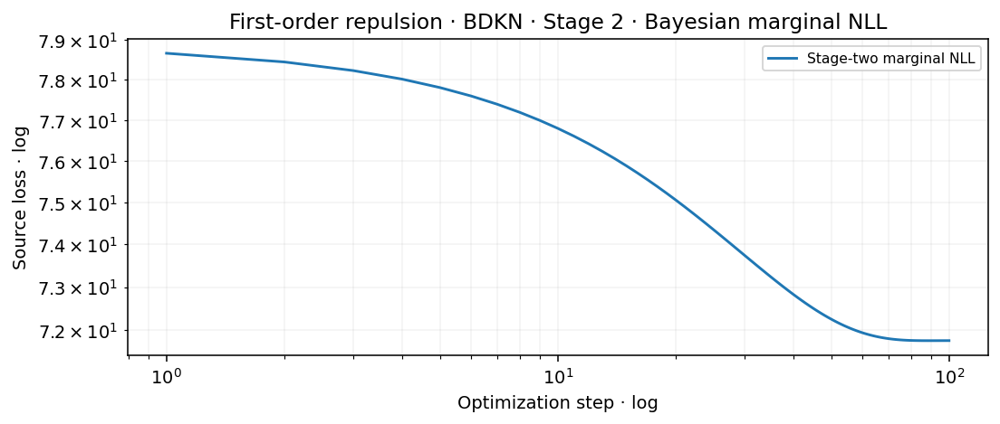
X: log · Y: log
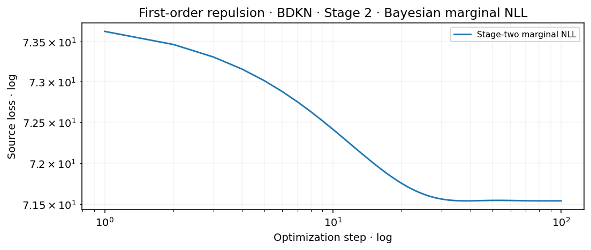
X: log · Y: log
Weight repulsion · location-independent
The loss compares network parameters directly. These same results apply to every location.
| Stage | RMSE | NLL | Training seconds |
|---|---|---|---|
| DE | 54.63503 | 9.27066 | 5.39 |
| BDKN | 59.17069 | 6.70893 | 5.52 |